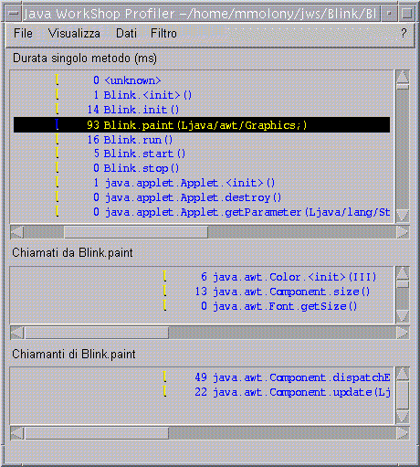

Esercizio 4: Raccolta dei dati sul profilo
In questo esercizio viene mostrato come eseguire il progetto Blink con il profiler di Java Development Environment. Il profiler consente di analizzare le prestazioni del programma per determinare la durata di ciascun metodo a esso relativo e il numero di volte che è stato eseguito.- Individuare nel gestore progetti il nome del progetto corrente.
Se il progetto corrente non è Blink, fare doppio clic sul nome di progetto Blink. - Avviare la creazione del profilo del progetto Blink scegliendo il
pulsante Analizza profilo
 sulla
barra degli strumenti principale di Java Development Environment.
sulla
barra degli strumenti principale di Java Development Environment.
Verrà visualizzata la finestra del visualizzatore applet. - Attendere almeno 45 secondi prima di passare alla fase successiva.
- Terminare la sessione del profilo scegliendo
Applet -> Esci nel visualizzatore applet.
Dopo avere creato il profilo del programma, nella finestra Profiler verranno visualizzati i dati memorizzati nel file Blink.prof della directory principale del progetto. - Nella finestra Profiler scegliere
Filtro -> Nessuno per visualizzare i dati relativi alla classe di sistema. - Scegliere
Visualizza -> Ordina per nome per visualizzare i dati del metodo in ordine alfabetico. - Selezionare il metodo Blink.paint (Ljava/awt/Graphics;).
- Controllare i dati del profilo che saranno simili a quelli illustrati nella figura seguente:
In questo periodo dovrebbero essere raccolti dati sufficienti per visualizzare un profilo utile.

I risultati indicano che:
- Java Development Environment ha impiegato 93 millisecondi per richiamare il metodo Blink.paint (Ljava/awt/Graphics;).
- Blink.paint (Ljava/awt/Graphics;) richiama tre metodi: java.awt.Color.<init> (III), java.awt.Component.size () e java.awt.Font.getSize ().
- I due metodi che richiamano il metodo Blink.paint (Ljava/awt/Graphics;) sono: java.awt.Component.dispatchEventImpl (Ljava/awt/AWTEvent;) e java.awt.Component.update (Ljava/awt/Graphics;).
 Lezione successiva
Lezione successiva
- Gli esercizi di questa sezione sono terminati. La prossima esercitazione sarà l'Esercitazione 2: Modifica degli attributi del progetto.